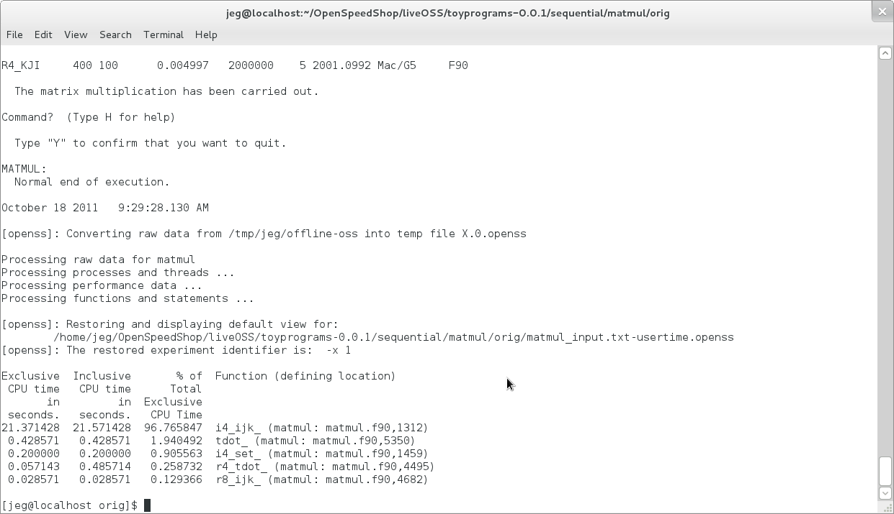
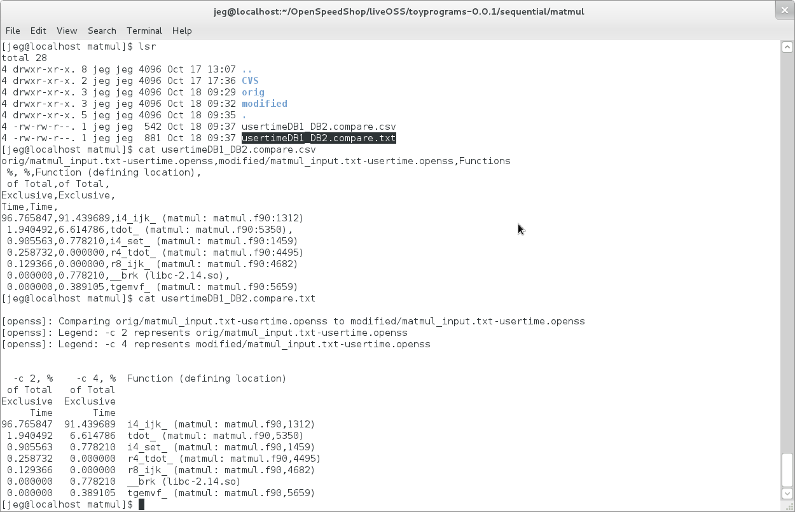
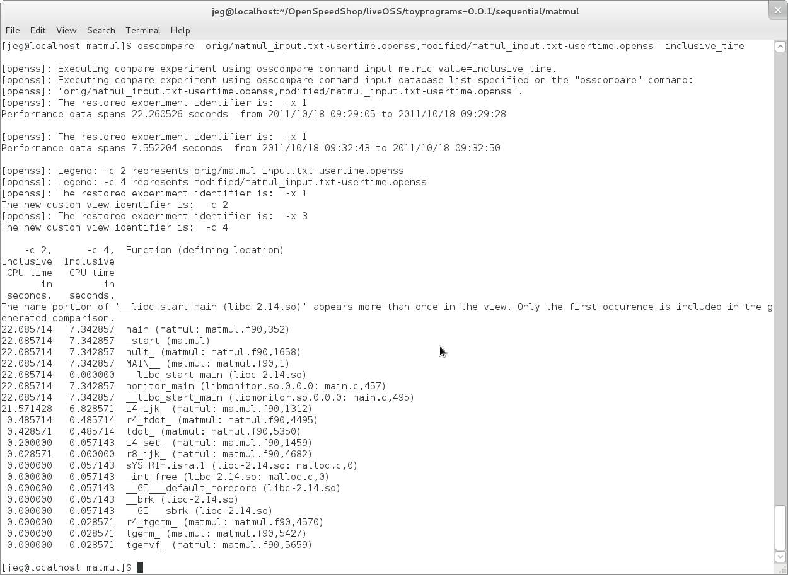
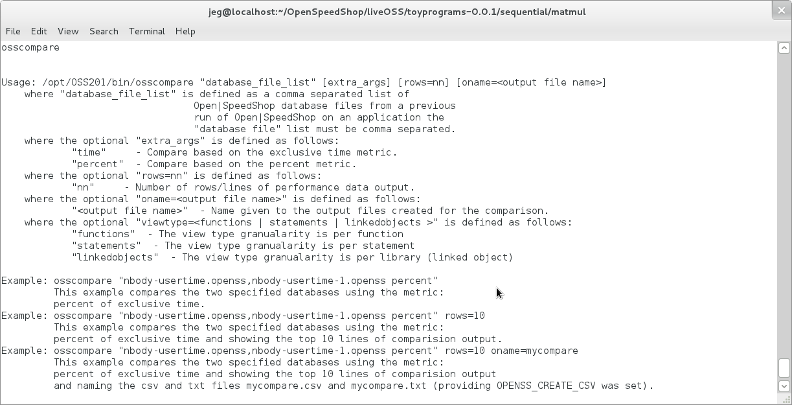
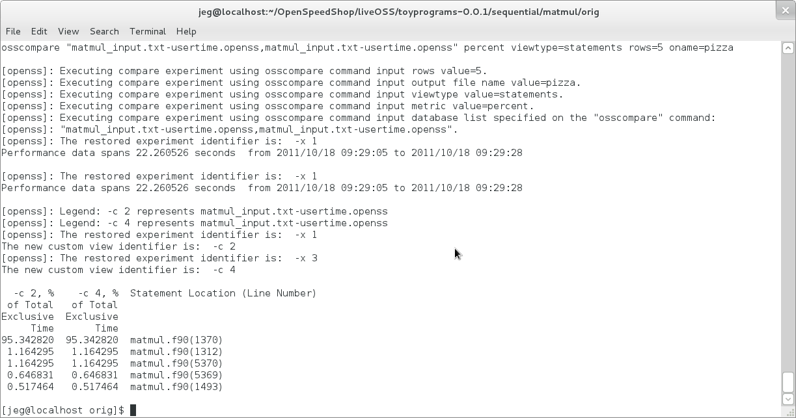

Using Open|SpeedShop™
Comparing performance data from different executions
of an application.
For this tutorial, we will run matmul under Open|SpeedShop using the
pcsamp experiment, then modify the source and run matmul
again using the pcsamp experiment. Then we will use the
osscompare script to show the differences.
Using the convenience scripts to compare a base run and a run
after modifying the source
Here we show the two malmul directories, one with the original
source (orig) and the other directory where the "do" loops have been
swapped to improve performance. By running an experiment on
the application built with the respective sources we can compare how
much performance has improved.

Using the command: ossusertime "matmul < matmul_input.txt" we
show the end of the application output and the Open|SpeedShop
default convenience script (ossusertime) output for the original
source.

Note: we now see the Open|SpeedShop database file:
matmul_input.txt-usertime.openss in the orig directory.
This is the result of the ossusertime
command done in the figure above.

Here we show the output for the ossusertime experiment run on the
modified source version of the applicaton.

Here we show the new database file for the run of ossusertime on the
modified source version of the application. We also show
the syntax of
the osscompare convenience script that will compare one run against
the other.

Here we see that the modified version has a significant speed-up due
to the source changes, as i4_ijk_ is three times faster.
Note the legend shows column headers that use "-c nn" syntax.
This is internal to Open|SpeedShop and somewhat difficult to change,
so we map these back to the database names.

Note: Here we use the compare metric of "percent" to compare
against. The syntax of osscompare allows many options
for the metric argument.
Anything that the Command Line Interface (CLI) tool will accept as a
"-m arg" argument, can be used as the osscompare metric.

With the environment variable OPENSS_CREATE_CSV set, osscompare will
create two files in addition to the side-by-side compare listing.
The files are a comma separated list file that can be imported to
spreadsheet programs for graphing and a text based file that can be
kept
as a record of the compare. The comparison must be
done twice to create these files so that is why the environment
variable was created.
Some users only want the side-by-side listing.

Here we compare using the metric: inclusive_time. This
metric includes the time spent in the function (xyz for example) and
all the time spent
in the functions it (xyz for example) calls.

Executing osscompare without arguments gives the help output.
Note you can compare at the Function, Statement, or Linked Object
(libray)
level. Use the viewtype= option to select the view type
level of comparison.

Here we show a comparison by statement limiting the output to 5 rows
and naming the output files pizza.csv and pizza.txt.

Thanks!
Please visit the Open|SpeedShop forum if you have questions: Open|SpeedShop
Forum.
Back To Getting Started With Open|SpeedShop